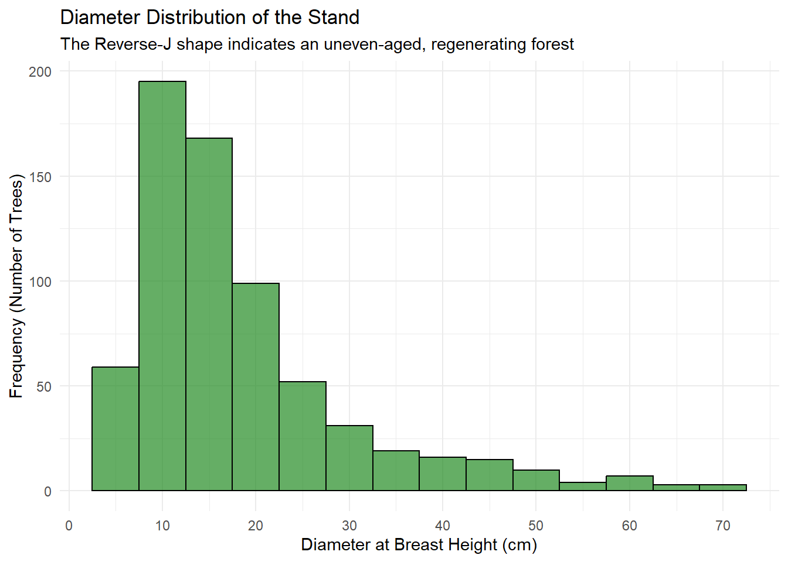
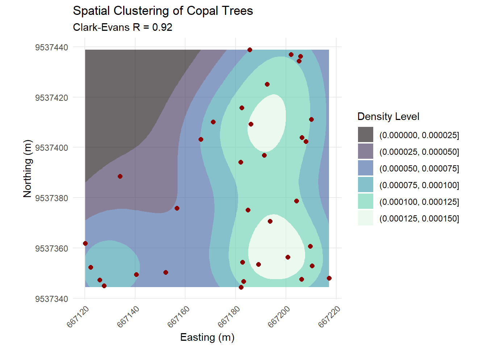
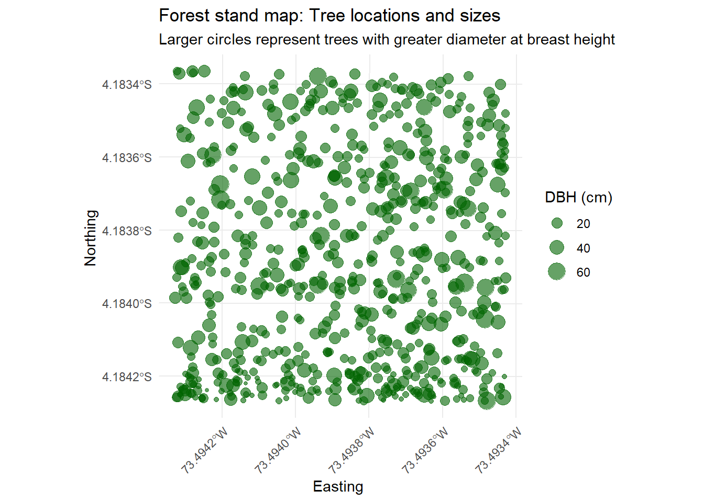
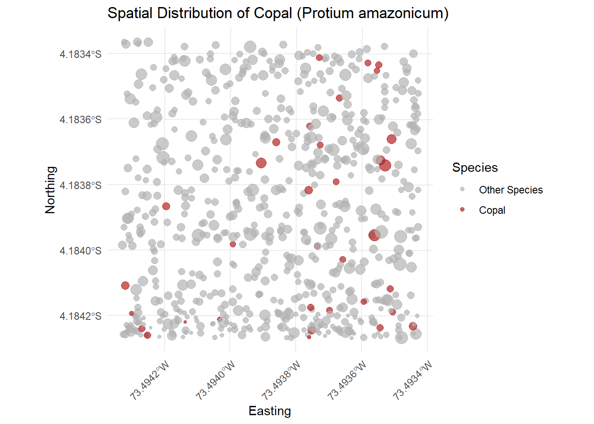
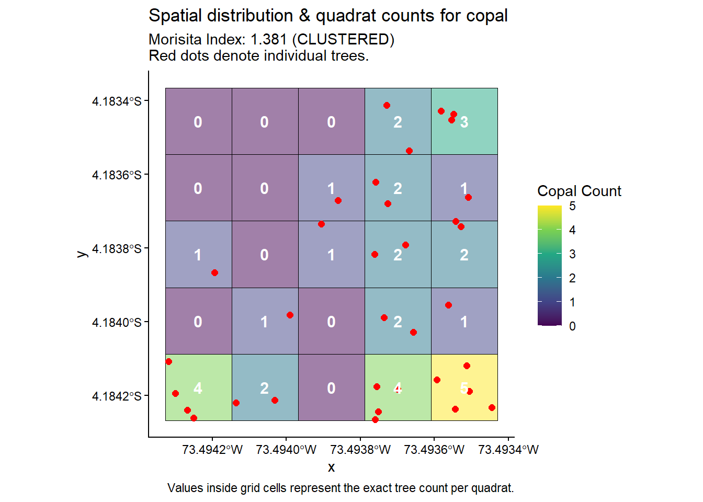
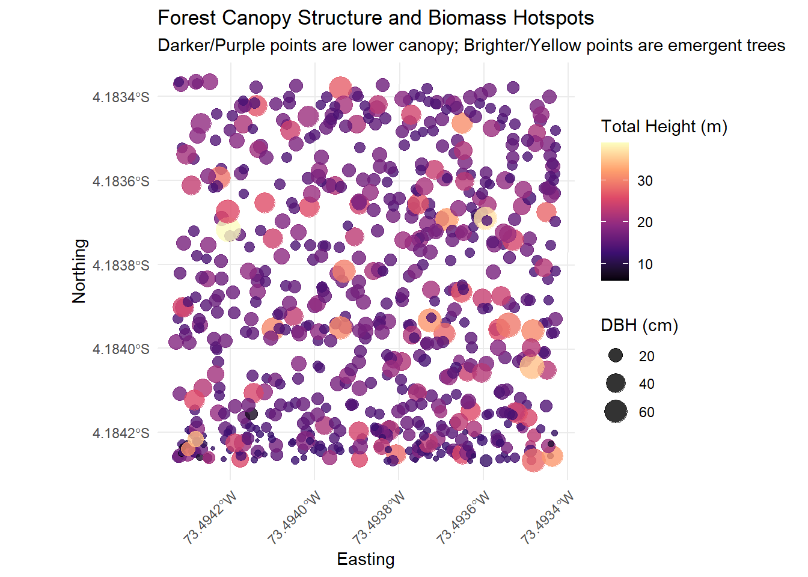
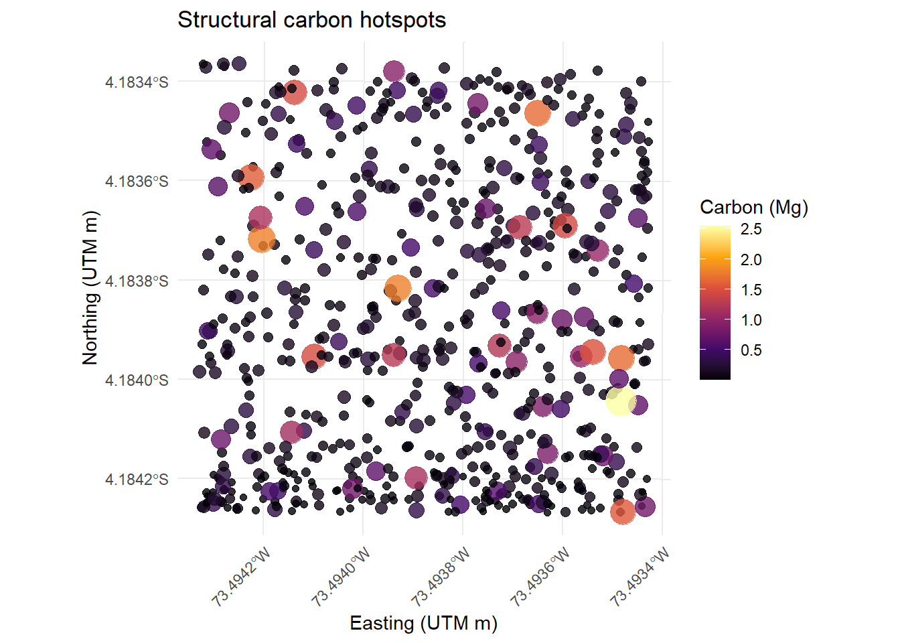

2 Chapter 3: Forest Stand Structure
2.1 Diameter at Breast Height (DBH)
The distribution of tree diameters is a key indicator of forest health, history, and successional stage. In natural, uneven-aged forests, we typically expect to see a “Reverse-J” curve. This means there are many small, young trees in the understory and progressively fewer large, older trees forming the upper canopy.
We can visualize this using a histogram of our DBH_cm column.
ggplot(inventory_clean, aes(x = DBH_cm)) +
# We use a binwidth of 5 cm, which is standard for forestry DBH classes
geom_histogram(binwidth = 5, fill = "forestgreen", color = "black", alpha = 0.7) +
# Create dynamic x-axis breaks based on our actual data max
scale_x_continuous(breaks = seq(0, max(inventory_clean$DBH_cm, na.rm = TRUE), by = 10)) +
labs(
title = "Diameter Distribution of the Stand",
subtitle = "The Reverse-J shape indicates an uneven-aged, regenerating forest",
x = "Diameter at Breast Height (cm)",
y = "Frequency (Number of Trees)"
) +
theme_minimal()
Figure 2.1: Diameter distribution showing a classic Reverse-J curve for a natural forest.
Interpretation of Diameter Distribution (Stand Structure)
Plot observations
This histogram visualizes the structural composition of the forest stand by grouping trees into Diameter at Breast Height (DBH) classes. The distribution exhibits a severe positive skew, with the vast majority of individual stems concentrated in the smallest size classes (primarily between 10 cm and 20 cm DBH). As diameter increases, the frequency of trees drops precipitously, forming a long right-hand tail with only a few massive individuals exceeding 70 cm DBH. As noted in the plot’s subtitle, this distinct, right-skewed shape is universally referred to as a “reverse-J” distribution.
Ecological theory and context
The reverse-J DBH distribution is one of the most fundamental structural signatures of a natural, undisturbed, uneven-aged tropical forest.1 Mathematically, this demographic equilibrium is often modeled using a negative exponential function (e.g., \(N(D) = k e^{-aD}\)), where the number of trees (\(N\)) in a given diameter class (\(D\)) declines at a constant rate.
This structural pattern is maintained by several interacting forest dynamics:
Continuous recruitment and high mortality: The massive spike on the left side of the graph represents a continuous influx of recruitment. However, the steep drop-off indicates severe mortality rates in the understory. Most of these small stems will die due to intense competition for light and resources before they ever reach the canopy.
Gap-phase dynamics and disturbance: The survival of small trees into larger DBH classes is highly dependent on canopy openings. Localized disturbances—such as storm-driven windthrow events, branch falls, or the natural senescence of canopy giants—create critical light gaps. The small trees waiting in the understory (the 10-20 cm class) respond to these gaps, driving the regeneration cycle.2
The biomass paradox (carbon implications): When transitioning from structural attributes to ecosystem functioning, this reverse-J curve presents a crucial paradox. While the smallest trees completely dominate the stand in terms of stem density, the extremely rare, large-diameter trees in the right-hand tail disproportionately dominate the stand’s Aboveground Biomass (AGB). In Amazonian ecosystems, these few large trees drive the bulk of the forest’s carbon storage capacity and significantly influence overarching gross primary production (GPP) and net ecosystem exchange (NEE).3
Accurately modeling this long tail is essential, as missing even a single massive tree in a field survey can drastically underestimate the carbon stock of the plot.
2.2 Stand-Level Metrics: Density and Basal Area (Per Hectare)
Visualizing the trees is helpful, but foresters need hard numbers to compare this stand to others across the Amazon. We need to calculate Stand Density (stems per hectare, \(N\)) and Total Basal Area (\(G\)).If we assume your inventory data represents a standard 1-hectare plot (or if you know the exact area, you can divide by it), we can easily summarize these metrics.
2.2.1 Quantitative Stand Metrics
Beyond visualizing the distribution of tree sizes, it is critical to quantify the overall physical occupation of the forest. The two most fundamental stand-level metrics are Stand Density (total number of trees) and Total Basal Area (the total cross-sectional area of all tree trunks).
Basal Area (\(BA\)) is the cross-sectional area of a tree trunk measured at breast height. It is a fundamental metric for understanding structural dominance and forest volume.4 To convert Diameter at Breast Height (\(DBH\)) measured in centimeters to Basal Area in square meters (\(m^2\)), we use the following geometric equation:
\[BA = \frac{\pi \times DBH^2}{40000}\] Let’s calculate the total stand metrics for our plot.
# Calculate individual Basal Area and summarize the stand
stand_summary <- inventory_clean %>%
mutate(BA_m2 = (pi * DBH_cm^2) / 40000) %>%
summarise(
Total_Stems = n(),
Total_Basal_Area_m2 = sum(BA_m2, na.rm = TRUE),
Mean_DBH_cm = mean(DBH_cm, na.rm = TRUE),
Max_DBH_cm = max(DBH_cm, na.rm = TRUE)
)
# Display as a neat table
kable(stand_summary,
caption = "Summary of stand-level structural metrics.",
col.names = c("Total Stems (N)", "Basal Area (m²)", "Mean DBH (cm)", "Max DBH (cm)"),
digits = 2)| Total Stems (N) | Basal Area (m²) | Mean DBH (cm) | Max DBH (cm) |
|---|---|---|---|
| 681 | 25.74 | 18.54 | 70.6 |
Interpretation of Stand-Level Structural metrics
Table observations
The summary table provides the foundational numerical metrics for the sampled forest stand. A total of 681 individual stems (\(N\)) collectively generate a Basal Area of 25.74 m². The Mean DBH sits at a relatively low 18.54 cm, which contrasts sharply with the Max DBH of 70.6 cm recorded for the largest tree in the plot.
****Ecological theory and context***
These aggregated figures translate the earlier visual distributions into standard forest mensuration metrics, confirming the structural integrity and maturity of the ecosystem:
Stand density and maturity: Basal area (the cross-sectional area of all tree stems at breast height) is one of the most critical metrics in forest ecology, serving as a highly reliable, non-destructive proxy for stand volume and Aboveground Biomass (AGB). A basal area of approximately 25.7 m² is a textbook benchmark for mature, intact terra firme forests in the Amazon, which typically range between 25 and 35 m² per hectare.5
Validating the reverse-J Curve: The stark numerical contrast between the high total stem count (681) and the low mean DBH (18.54 cm) mathematically validates the reverse-J histogram analyzed previously. The statistical mean is heavily anchored by the massive influx of small, understory stems (10–20 cm class), proving that the stand is continuously regenerating rather than stagnating.
The carbon drivers: The presence of a tree reaching 70.6 cm in diameter highlights the immense ecological weight of canopy giants. While these large-diameter individuals are numerically rare within the 681 total stems, basal area scales with the square of the radius. Therefore, a single 70 cm tree contributes exponentially more to the 25.74 m² total than dozens of 10 cm saplings combined. As demonstrated by Fauset et al. (2015), this structural reality dictates Amazonian carbon cycling: a hyperdominant minority of large trees dictates the overarching carbon storage and flux capacity of the entire ecosystem.
2.3 Structural Composition: DBH by Dominant Species
The overall “Reverse-J” curve is useful, but it hides the fact that different species occupy different structural niches. Some species are restricted to the understory (small DBH), while others consistently emerge into the upper canopy (large DBH).
2.3.1 Structural Roles of Dominant Species
The overall forest might follow a Reverse-J curve, but individual species often have distinct structural roles. Some are understory specialists that rarely exceed a small DBH, while others are canopy emergents.
We can visualize this by isolating our most abundant species and plotting their specific diameter distributions using density curves.
# Identify the top 4 species by abundance
top_4_species <- inventory_clean %>%
count(Scientific_Name) %>%
slice_max(n, n = 4) %>%
pull(Scientific_Name)
# Filter the data and plot density curves
inventory_clean %>%
filter(Scientific_Name %in% top_4_species) %>%
ggplot(aes(x = DBH_cm, fill = Scientific_Name)) +
geom_density(alpha = 0.6) +
scale_x_continuous(limits = c(0, 100)) + # Adjust based on your max DBH
facet_wrap(~ Scientific_Name, ncol = 2) +
labs(
title = "Diameter Distribution by Species",
x = "DBH (cm)",
y = "Density"
) +
theme_minimal() +
theme(
legend.position = "none",
strip.text = element_text(face = "italic", size = 10)
)
Figure 2.2: Diameter distributions of the top 4 most abundant species, showing their different structural roles.
Interpretation of Species-specific diameter distributions
Plot observations While the entire forest stand exhibits a classic reverse-J curve, breaking down the diameter distribution by the four most abundant species reveals highly distinct density profiles. Rather than strictly descending exponential curves, these species exhibit unimodal (peak-driven) distributions that highlight their specific structural niches:
Protium amazonicum displays a sharply defined, narrow peak at the very lowest DBH classes (~10–15 cm) with a steep drop-off, indicating a massive concentration of small stems and very few large individuals.
Inga ruiziana and Virola duckei show slightly broader distributions peaking around 15–20 cm, with V. duckei displaying a minor secondary bump past 50 cm, hinting at a few surviving canopy adults.
Pouteria guianensis, the most abundant species in the stand, exhibits the widest and most normally distributed density curve among the four. Its peak is shifted to the right (~20–30 cm), and it maintains a strong presence well into the 40–50 cm DBH range.
Ecological theory and context
Analyzing size-class distributions at the species level is a powerful method for inferring life-history strategies, population dynamics, and vertical stratification without needing decades of longitudinal growth data.6 The differing shapes in this plot illustrate how hyperdominant species partition the physical space of the forest:
Vertical stratification and guilds: The density curves perfectly reflect the distinct ecological guilds (understory, midstory, and canopy) of these taxa. The sharp, left-skewed peak of Protium amazonicum is characteristic of a highly shade-tolerant, midstory specialist. It successfully recruits and persists in the shaded understory but rarely reaches the upper canopy. In contrast, Pouteria guianensis exhibits the signature of a true canopy species; its broader distribution and right-shifted peak indicate that a larger proportion of its individuals successfully recruit into the upper strata and accumulate significant diameter.
Deconstructing the reverse-J: This plot resolves a common misconception in forest attributes analysis. The stand-level reverse-J curve is not simply the average shape of every species. Instead, as demonstrated by Poorter et al. (2006), the stand-level curve is an aggregate composed of hundreds of different species-specific bell curves, each shifted slightly left or right depending on the species’ maximum potential stature and specific structural role.
Biomass contributions: From a carbon modeling perspective, this confirms that not all abundant species contribute equally to Aboveground Biomass (AGB). While Protium amazonicum heavily influences stand density and biodiversity metrics, Pouteria guianensis—due to its capacity to sustain larger diameters—plays a vastly disproportionate role in the stand’s total carbon storage.
2.4 2D Spatial Distribution and Mapping
Forestry is inherently spatial. Knowing what is in the forest and how big it is only tells half the story; we also need to know exactly where the trees are.
Thanks to the Easting (ESTE) and Northing (NORTE) coordinates collected in the field, we can map our forest stand. In this chapter, we will use the sf (Simple Features) package to convert our standard data table into a spatial object and ggplot2 to map it.
2.5 Creating Spatial Data
Currently, our dataset is just a data frame (a table). To map it, R needs to understand that the Easting and Northing columns represent physical locations on the Earth.
We do this using the st_as_sf() function. We must also define the Coordinate Reference System (CRS). Since these are UTM coordinates (commonly used in South American forest inventories), we will assign an EPSG code. Note: You may need to adjust the EPSG code (e.g., 32718 for UTM Zone 18S) depending on the exact location of your study area.
# Convert the cleaned data frame into an 'sf' spatial object
inventory_sf <- inventory_clean %>%
st_as_sf(coords = c("Easting", "Northing"),
crs = 32718, # Replace with your specific UTM EPSG code if different
remove = FALSE) # Keep original coordinate columns just in case
# Verify it is now a spatial object
class(inventory_sf)## [1] "sf" "data.frame"2.6 Advanced Spatial Structure: Point Pattern Analysis by Species
Analyzing the spatial pattern of all trees combined can mask underlying ecological processes. To truly understand forest dynamics—such as seed dispersal limitations or micro-habitat preferences—we should analyze the spatial distribution of individual species.
We will test whether our most dominant species, Copal (Protium amazonicum), is spatially clustered, randomly distributed, or uniformly spaced. We calculate the Clark-Evans Nearest Neighbor Index (\(R\)):\(R = 1\): Random distribution.\(R < 1\): Clustered distribution (e.g., limited seed dispersal, canopy gaps).\(R > 1\): Uniform distribution (e.g., intense competition for resources).We will use the spatstat package to run the statistical test and ggplot2 to visualize the clustering via a 2D density heatmap.
# Install spatstat if needed: install.packages("spatstat")
library(spatstat)
library(ggplot2)
# 1. Filter the spatial dataset for a specific species
copal_sf <- inventory_sf %>%
filter(Common_Name == "Copal")
# 2. Extract coordinates for Copal
coords_copal <- st_coordinates(copal_sf)
# IMPORTANT: We must define the observation window using the boundaries
# of the ENTIRE plot, not just the Copal trees, to avoid edge-effect errors.
all_coords <- st_coordinates(inventory_sf)
win <- owin(xrange = range(all_coords[,1]), yrange = range(all_coords[,2]))
# Create the spatstat point pattern (ppp) object for Copal
copal_ppp <- ppp(x = coords_copal[,1], y = coords_copal[,2], window = win)
# 3. Calculate the Clark-Evans test
ce_test <- clarkevans.test(copal_ppp)
# Print the statistical results
cat("Clark-Evans Index (R) for Copal:", round(ce_test$statistic, 3), "\n")## Clark-Evans Index (R) for Copal: 0.916## p-value: 0.31402# 4. Visualize the clustering using ggplot2
# Ensure the spatial object is strictly projected in UTM meters
copal_sf_utm <- st_transform(copal_sf, crs = 32718)
coords_copal_utm <- st_coordinates(copal_sf_utm)
copal_df <- as.data.frame(coords_copal_utm)
ggplot() +
# Use geom_density_2d_filled for a much cleaner, smoother heatmap
geom_density_2d_filled(data = copal_df, aes(x = X, y = Y), alpha = 0.6, bins = 6) +
# Add the individual trees on top so we can see the exact locations
geom_sf(data = copal_sf_utm, color = "darkred", size = 2) +
# Use a discrete viridis scale since the filled contours create categories
scale_fill_viridis_d(option = "mako", name = "Density Level") +
# Force ggplot to use the UTM projection for the axes
coord_sf(datum = st_crs(32718)) +
labs(
title = "Spatial Clustering of Copal Trees",
subtitle = paste0("Clark-Evans R = ", round(ce_test$statistic, 2)),
x = "Easting (m)",
y = "Northing (m)"
) +
theme_minimal() +
theme(
axis.text.x = element_text(angle = 45, hjust = 1),
legend.position = "right"
)
The combination of the Clark-Evans test and the 2D density heatmap provides powerful insights into the biology of our forest stand.First, our Clark-Evans index is \(R = 0.92\). Because \(R < 1\), this indicates that Copal (Protium amazonicum) trees are not randomly scattered; they exhibit a spatially clustered (aggregated) distribution.
This mathematical clustering is visually confirmed by our density heatmap. We can clearly see two distinct “hotspots” of high Copal density (the lightest colored areas) forming a corridor on the eastern side of the plot, while the northwestern corner is almost entirely devoid of this species.
Ecologically, this clustering is usually driven by two primary factors in tropical forests:
Seed Dispersal Limitation: Copal seeds are often heavy and drop near the parent tree, or they are dispersed by specific animals (like primates or birds) that deposit seeds in concentrated areas beneath resting or feeding sites.
Micro-habitat Preferences: The “empty” northwestern corner might possess slightly different soil drainage, a different topography, or could be dominated by a highly competitive canopy species that restricts Copal regeneration. The eastern hotspots might represent an area where a historical canopy gap (a tree fall) occurred decades ago, providing the sudden influx of light necessary for a cluster of Copal saplings to successfully establish and grow together.
2.6.1 Mapping Forest Structure
Now that R knows these are spatial points, plotting them is as easy as adding geom_sf() to our standard ggplot2 workflow.
Let’s start by plotting every tree in the stand. To make the map informative, we will scale the size of each point based on the tree’s diameter (DBH_cm). This allows us to instantly locate the oldest, largest trees in the canopy.
ggplot(data = inventory_sf) +
# Use geom_sf for spatial data, mapping size to DBH
geom_sf(aes(size = DBH_cm), color = "darkgreen", alpha = 0.6) +
# Adjust the size scale so small trees are visible but large trees don't overlap too much
scale_size_continuous(range = c(1, 6), name = "DBH (cm)") +
labs(
title = "Forest stand map: Tree locations and sizes",
subtitle = "Larger circles represent trees with greater diameter at breast height",
x = "Easting ",
y = "Northing "
) +
theme_minimal() +
theme(
# Angle the x-axis text so the long UTM coordinates don't overlap
axis.text.x = element_text(angle = 45, hjust = 1)
)
Figure 2.3: Spatial distribution of trees in the inventory plot. Point size correlates to tree diameter.
Interpretation of spatial distribution and stand mapping
Plot observations
This bubble map visualizes the precise geo-referenced spatial distribution of all stems within the sampled plot. The axes provide the geographic coordinates (Easting and Northing), placing this stand within the western Amazon basin. Each point represents an individual tree, with the marker size scaled proportionally to its Diameter at Breast Height (DBH). The visual footprint reveals a dense matrix of smaller stems heavily interspersed with occasional large-diameter trees (circles representing DBH > 60 cm), with no large structural voids or canopy gaps currently evident in the mapped area.
Ecological theory and context
Transitioning from non-spatial histograms to explicit spatial mapping is a critical leap in forest attributes analysis. While diameter distributions tell us what sizes exist, spatial maps tell us how they interact.
This visualization is foundational for understanding local forest dynamics and ecosystem scaling:
Spatial point pattern analysis: In tropical ecology, the physical arrangement of trees is rarely perfectly random. Researchers use maps like this to run spatial point pattern analyses (e.g., Ripley’s \(K\)-function or pair-correlation functions) to determine if trees are clustered, overdispersed, or randomly distributed.7 Clumping often indicates dispersal limitation, while overdispersion can signal intense density-dependent mortality or competition.
Neighborhood competition: The map illustrates asymmetric competition for light and space. The largest circles (canopy giants) exert a strong competitive “zone of influence” over the surrounding smaller stems. The dense packing of small circles in the interstitial spaces between large trees represents the understory community waiting for a gap-phase disturbance.8
Upscaling and remote sensing: This geo-referenced map acts as the ultimate bridge between ground-based ecological theory and landscape-level monitoring. Knowing the exact coordinate and DBH of every massive tree allows researchers to accurately calibrate aboveground biomass (AGB) estimates against high-resolution satellite imagery or LiDAR data.9 This ground-truthing is essential for accurately monitoring carbon stocks across the broader Amazonian landscape.
2.6.2 Visualizing Species Distribution
Some tree species grow in clusters due to seed dispersal mechanisms or soil micro-conditions, while others are randomly scattered. We can visualize this by highlighting specific species on our map.
Looking at our dataset, Protium amazonicum (Copal) and species of the Eschweilera genus (like Machimango) are highly abundant. Let’s create a map that specifically highlights the “Copal” trees against the rest of the stand.
ggplot(data = inventory_sf) +
# Map color to whether the tree is Copal or not
geom_sf(aes(size = DBH_cm, color = Common_Name == "Copal"), alpha = 0.7) +
# Manually set colors: Grey for other trees, Red for Copal
scale_color_manual(values = c("grey70", "firebrick"),
labels = c("Other Species", "Copal"),
name = "Species") +
scale_size_continuous(range = c(1, 5), guide = "none") + # Hide size legend to keep it clean
labs(
title = "Spatial Distribution of Copal (Protium amazonicum)",
x = "Easting",
y = "Northing"
) +
theme_minimal() +
theme(axis.text.x = element_text(angle = 45, hjust = 1))
Figure 2.4: Highlighting the spatial distribution of Copal (Protium amazonicum) within the stand.
Interpretation of species-specific spatial distribution
Plot observations This targeted spatial map isolates the distribution of Protium amazonicum (commonly known as Copal, highlighted in red) against the background matrix of all other forest stems (grey). Two distinct patterns immediately emerge. First, corroborating the species-specific diameter distributions analyzed earlier, the red markers are almost exclusively small in diameter; there are no massive canopy-level P. amazonicum individuals in this stand. Second, the spatial arrangement of this species is not perfectly random. There are localized clusters or patches where multiple individuals are packed closely together, as well as broader empty spaces where the species is completely absent.
Ecological theory and context
Isolating individual species on a geo-referenced grid allows ecologists to move beyond general stand structure and investigate the specific behavioral and life-history traits of hyperdominant taxa:
Intraspecific vs. Interspecific interactions: By mapping a single species against the rest of the stand, researchers can test for spatial aggregation. The visible clustering of P. amazonicum is a textbook example of dispersal limitation. Because tropical seeds are often gravity-dropped or dispersed by local fauna over very short distances, seedlings tend to germinate in dense “halos” around parent trees.10
Microhabitat filtering (niche partitioning): The patchy distribution also hints at micro-topographic or edaphic (soil) preferences. In hyper-diverse Amazonian ecosystems, seemingly uniform forest floors contain subtle gradients in soil moisture, drainage, and nutrient availability. Species like P. amazonicum often aggregate in specific microhabitats where they hold a competitive advantage over other taxa.11
Connecting structure to space: This visualization perfectly validates the species-specific DBH histograms discussed previously. We can spatially verify that P. amazonicum acts as a highly successful midstory/understory specialist. It weaves itself through the interstitial spaces between larger canopy giants (the large grey circles), filling the lower strata of the forest architecture without requiring major canopy gaps to survive.
2.7 Analyzing Spatial Clustering with the Morisita Index
Visualizing points on a map is incredibly helpful, but our eyes can sometimes deceive us into seeing patterns that aren’t statistically there. To objectively determine if a species is clustered, random, or uniformly distributed, we can calculate the Morisita Index of Dispersion (Id).
The interpretation of the index is straightforward:
\[Id>1: Clustered (Aggregated) distribution.\]
\[Id=1: Random distribution.\]
\[Id<1: Uniform (Regular) distribution.\]
To calculate this, we need to divide our forest stand into equal-sized quadrats (a grid), count the number of individuals in each quadrat, and apply the Morisita formula. We will use the sf package to create our grid and base R to calculate the math for our most abundant species, Copal (Protium amazonicum).
# 1. Filter our spatial data for just the Copal trees
copal_sf <- inventory_sf %>%
filter(Common_Name == "Copal")
# 2. Create a grid (quadrats) over our forest plot
plot_grid <- st_make_grid(inventory_sf, n = c(5, 5)) # 5x5 grid (25 quadrats total)
# Convert the grid to an sf object so we can map and manipulate it
plot_grid_sf <- st_sf(quadrat_id = 1:length(plot_grid), geometry = plot_grid)
# 3. Count how many Copal trees fall into each quadrat
plot_grid_sf$tree_count <- lengths(st_intersects(plot_grid_sf, copal_sf))
# 4. Calculate the Morisita Index mathematically BEFORE plotting
q <- nrow(plot_grid_sf) # Total number of quadrats (q)
N <- sum(plot_grid_sf$tree_count) # Total number of Copal trees (N)
n <- plot_grid_sf$tree_count # Number of trees in each quadrat (n_i)
# Morisita Formula: Id = q * [ sum(n * (n - 1)) / (N * (N - 1)) ]
morisita_index <- q * (sum(n * (n - 1)) / (N * (N - 1)))
# Determine the distribution string for our plot subtitle
dist_type <- if(morisita_index > 1) {
"CLUSTERED"
} else if (morisita_index < 1) {
"UNIFORM"
} else {
"RANDOM"
}
# 5. Map the quadrats with values overlaid
ggplot() +
geom_sf(data = plot_grid_sf, aes(fill = tree_count), alpha = 0.5, color = "black") +
geom_sf(data = copal_sf, color = "red", size = 2) +
# This new line adds the tree count numbers centrally over each quadrat grid:
geom_sf_text(data = plot_grid_sf, aes(label = tree_count), color = "white", fontface = "bold", size = 4) +
scale_fill_viridis_c(name = "Copal Count") +
labs(
title = "Spatial distribution & quadrat counts for copal",
subtitle = paste0("Morisita Index: ", round(morisita_index, 3), " (", dist_type, ")\nRed dots denote individual trees."),
caption = "Values inside grid cells represent the exact tree count per quadrat."
) +
theme_classic()
## Total Quadrats (q): 25## Total Copal Trees (N): 34## Morisita Index (Id): 1.381## Result: The distribution is CLUSTEREDInterpretation of spatial aggregation (Morisita Index)
Plot observations
This quadrat-based map quantifies the spatial arrangement of Protium amazonicum (Copal) across the forest stand. By overlaying a 5x5 grid, the analysis transitions from observing unanchored individual points to measuring localized spatial density. The color gradient and numerical labels immediately highlight a strong spatial bias: the southern edge of the plot contains dense patches (up to 4 and 5 individuals per quadrat), while a large, continuous block in the northwestern sector is completely empty (0 individuals).
Ecological theory and context
The mathematical confirmation of this visual pattern is provided by the Morisita Index of Dispersion (\(I_d\)). This index is a highly robust statistical tool in forest ecology because its results are largely independent of the quadrat size or total population density.
Clustered distribution: The index uses a threshold of 1.0 to represent a perfectly random (Poisson) distribution. The calculated \(I_d\) of 1.381 mathematically dictates that the Copal population is significantly clustered or aggregated.12
Ecological drivers: This quantified clustering strongly supports the theories of dispersal limitation and microhabitat filtering discussed in the previous section. The cluster of “empty” quadrats (0 counts) suggests a distinct micro-zone where localized conditions—such as subtle shifts in soil moisture, topography, or intense shading by canopy giants—prevent P. amazonicum recruitment. Conversely, the high-density quadrats represent optimal environmental niches or the direct seed-drop zones surrounding mature parent trees.
Methodological Value: Quadrat analysis is fundamental in forest attributes analysis because it proves that simple, stand-level averages (e.g., overall stems per hectare) can obscure extreme local variations. A researcher measuring only the top-left corner of this plot would conclude Copal is absent, while one measuring the bottom-right would drastically overestimate its abundance.
2.8 Spatial Visualization of DBH and tree height
While mapping species presence is crucial, foresters also need to understand the spatial distribution of biomass and canopy structure. Are the tallest trees clustered in a specific valley? Are the widest trees evenly distributed?
We can visualize multiple quantitative parameters simultaneously on a single map. Using our spatial object (inventory_sf),we will map the physical location of each tree, scale the size of the point by its DBH (DBH_cm), and apply a color gradient to represent its total height (Height_m).
# Ensure Height is numeric (in case it imported as character)
inventory_sf <- inventory_sf %>%
mutate(Height_m = as.numeric(Height_m)) %>%
filter(!is.na(Height_m)) # Remove any rows without height data
# Create a multi-variable spatial plot
ggplot(data = inventory_sf) +
# Map size to DBH, and color to Height
geom_sf(aes(size = DBH_cm, color = Height_m), alpha = 0.8) +
# Use a viridis color palette which is colorblind-friendly and intuitive for heights
scale_color_viridis_c(option = "magma", name = "Total Height (m)") +
# Scale the size of the points
scale_size_continuous(range = c(1, 7), name = "DBH (cm)") +
labs(
title = "Forest structure",
subtitle = "Darker/Purple points are lower canopy; Brighter/Yellow points are emergent trees",
x = "Easting",
y = "Northing"
) +
theme_minimal() +
theme(
axis.text.x = element_text(angle = 45, hjust = 1),
legend.position = "right"
)
Figure 2.5: Spatial distribution of forest structure. Point size represents DBH (cm) and color represents Total Height (m).
Interpretation of forest canopy structure and stratification
Plot observations This visualization upgrades the previous spatial point pattern map by layering a fourth dimension of data: Total Tree Height. While the X and Y axes map the spatial coordinates and the bubble size represents Diameter at Breast Height (DBH), the color gradient (from dark purple to bright yellow) quantifies vertical stature.
The plot reveals a “sea” of dark purple circles, indicating that the vast majority of stems are relegated to the lower canopy and understory (roughly 10–15 meters tall). Punctuating this dark matrix are scattered, large, bright yellow and orange markers. These represent the massive emergent trees that exceed 30 meters in height, structurally dominating their immediate spatial neighborhoods. Furthermore, the visual correlation is unmistakable: nearly all bright yellow points are also the largest circles, visually confirming the strict allometric relationship between stem girth and vertical height.
Ecological theory and context
By integrating height with spatial distribution, this map effectively compresses the complex 3-D architecture of a tropical forest into a readable 2-D plane. This is critical for understanding several advanced ecological dynamics:
Vertical stratification: Tropical forests are classically defined by their multi-layered vertical architecture.13 The dark purple points represent the highly shade-tolerant understory and midstory guilds (such as the Protium amazonicum clustered in the previous analysis). The bright yellow points represent the sun-demanding canopy and emergent layers. This stratification partitions light resources and creates distinct microclimates at different vertical levels of the forest.
Tree allometry and biomechanics: The map visually proves the biomechanical constraints of tree growth. To access the unbroken sunlight of the upper canopy (bright colors), a tree must invest heavily in structural support (large DBH / large circle size) to withstand wind shear and gravitational load.
3D biomass and remote sensing: Moving from DBH-only models to DBH-plus-height models drastically reduces uncertainty in Aboveground Biomass (AGB) calculations.14 This exact type of mapped height data is what ecologists use to ground-truth and calibrate airborne LiDAR (Light Detection and Ranging) surveys. The spatial roughness of the canopy—where tall emergent trees create turbulent aerodynamic drag—directly impacts how momentum, heat, and trace gases (like CO₂) mix between the forest and the atmosphere.
2.9 Biomass and carbon as structural attributes
While DBH and height give us the geometric structure of the forest, Aboveground Biomass (AGB) represents the true physical weight and 3D occupation of the stand.
To calculate AGB without destructively harvesting trees, we use the pantropical allometric model by Chave et al. (2014). This requires our DBH, our estimated Height, and the Wood Specific Gravity (\(\rho\)) of each species.
2.9.1 Extracting Wood Density and Calculating AGB
We can retrieve the regional wood density for our species using the Global Wood Density Database (Zanne et al., 2009) via the BIOMASS package. Once we have all three variables, we calculate AGB (in kg) using the formula:
\[AGB = 0.0673 \times (\rho \times DBH^2 \times H)^{0.976}\]
library(BIOMASS)
library(tidyverse)
# 1. Split Scientific Name to get Genus and Species
inventory_sf <- inventory_sf %>%
separate(Scientific_Name, into = c("Genus", "Species"),
sep = " ", extra = "drop", remove = FALSE)
# 2. Retrieve Wood Density for South America (Tropical)
wd_data <- getWoodDensity(genus = inventory_sf$Genus,
species = inventory_sf$Species,
region = "SouthAmericaTrop")
# 3. Calculate AGB and Carbon (Mg)
inventory_sf <- inventory_sf %>%
mutate(
WoodDensity_g_cm3 = wd_data$meanWD,
# Calculate AGB in kg
AGB_kg = 0.0673 * (WoodDensity_g_cm3 * DBH_cm^2 * Height_m)^0.976,
# Convert to metric tonnes (Mg)
AGB_Mg = AGB_kg / 1000,
# Estimate Carbon (47.1% of AGB)
Carbon_Mg = AGB_Mg * 0.471
)
# Summarize the stand totals
stand_carbon <- inventory_sf %>%
st_drop_geometry() %>%
summarise(
Total_AGB_Mg_ha = sum(AGB_Mg, na.rm = TRUE),
Total_Carbon_Mg_ha = sum(Carbon_Mg, na.rm = TRUE)
)
kable(stand_carbon, digits = 2, caption = "Total stand AGB and carbon storage.")| Total_AGB_Mg_ha | Total_Carbon_Mg_ha |
|---|---|
| 218.58 | 102.95 |
Interpretation of total stand biomass and carbon storage
Table observations
This summary table presents the final, aggregated ecosystem metrics scaled to a per-hectare basis. The stand supports a Total Aboveground Biomass (AGB) of 218.58 Mg ha⁻¹ (Megagrams, or metric tons, per hectare). When converted to elemental carbon, this equates to a Total Carbon storage of 102.95 Mg ha⁻¹.
Ecological theory and context These two numbers represent the ultimate synthesis of all the structural, spatial, and allometric forest attributes analyzed in this chapter. They ground the stand within the broader context of Amazonian biogeochemistry:
Regional biomass baselines: An AGB of ~219 Mg ha⁻¹ falls squarely within the expected range for intact terra firme forests in the western Amazon. Due to more fertile soils and different disturbance regimes, western Amazonian forests typically exhibit higher turnover rates and slightly lower standing biomass than the slower-growing, denser forests of the central and eastern basin.15
The Biomass-to-Carbon conversion: The table highlights that AGB and Carbon are not a 1:1 ratio. The calculation relies on the well-established ecological constant that tropical angiosperm wood is composed of approximately 47% to 50% carbon by dry mass.16 The ratio here (102.95 / 218.58 = ~0.471) reflects the rigorous application of this ~47.1% conversion factor, avoiding the overestimations that occur when using a generic 50% multiplier.
Structural synthesis: This final carbon tally mathematically validates the “biomass paradox” observed in the previous diameter and canopy height maps. While the understory is packed with hundreds of small stems, the bulk of this 102.95 Mg ha⁻¹ carbon reservoir is physically locked inside the massive trunks and complex branch networks of the few towering canopy emergents (the >60 cm DBH trees). Accurately estimating this number requires integrating tree height, diameter, and species-specific wood density into robust pantropical allometric models.17
2.10 Spatial distribution of carbon
Forest biomass is rarely distributed evenly. In old-growth Amazonian stands, massive emergent trees dictate the canopy structure and can store up to 50% of the total carbon. By mapping our carbon estimates, we can identify these structural “hotspots.”
ggplot(data = inventory_sf) +
# Map size and color to the Carbon variable
geom_sf(aes(size = Carbon_Mg, color = Carbon_Mg), alpha = 0.8) +
scale_color_viridis_c(option = "inferno", name = "Carbon (Mg)") +
scale_size_continuous(range = c(1.5, 8), guide = "none") +
labs(
title = "Structural carbon hotspots",
x = "Easting (UTM m)",
y = "Northing (UTM m)"
) +
theme_minimal() +
theme(
axis.text.x = element_text(angle = 45, hjust = 1),
legend.position = "right"
)
Figure 2.6: Spatial distribution of structural carbon. Bright yellow circles indicate massive trees dominating the canopy structure and carbon pool.
Interpretation of structural carbon hotspots
Plot observations This spatial map translates the forest’s physical structure directly into elemental carbon storage. By scaling both the size and the color gradient of the points to represent Carbon (Mg) per individual tree, the visualization highlights extreme spatial heterogeneity. The plot is dominated by a dense matrix of small, dark purple dots, indicating that the vast majority of individual stems store less than 0.5 Mg of carbon. In stark contrast, a sparse scattering of bright orange and yellow markers reveals the locations of the stand’s “carbon hotspots”—massive individual trees that each sequester upwards of 2.0 to 2.5 Mg of carbon.
Ecological theory and context Mapping carbon spatially rather than just structurally provides critical insights into forest vulnerability, disturbance regimes, and overarching biogeochemical cycles:
The carbon oligarchy: This visual perfectly encapsulates the hyperdominance of carbon storage in Amazonian ecosystems.18 While the understory contains hundreds of stems, the ecosystem’s total carbon capacity is disproportionately anchored by a highly select oligarchy of canopy giants.
Disturbance dynamics: Because the stand’s carbon is so heavily concentrated in these few bright yellow hotspots, the forest’s overall carbon balance is highly sensitive to the mortality of large trees. When these massive individuals succumb to storm-driven windthrow events or natural senescence, they instantly transfer immense amounts of sequestered carbon into the dead wood (necromass) pool.19
Spatial gap creation: The fall of one of these 2.5 Mg giants does not just shift carbon pools; it physically crushes neighboring smaller stems and tears open massive canopy gaps. This localized destruction restarts the successional clock in that specific spatial coordinate, driving the gap-phase regeneration cycles necessary to maintain the reverse-J diameter distribution we observed earlier.
H Arthur Meyer, “Structure, Growth, and Drain in Balanced Uneven-Aged Forests,” Journal of Forestry 50, no. 2 (1952): 85–92.↩︎
David A Clark and Deborah B Clark, “Life History Diversity of Canopy and Emergent Trees in a Neotropical Rain Forest,” Ecological Monographs 62, no. 3 (1992): 315–44, https://doi.org/10.2307/2937114.↩︎
JWF Slik et al., “Large Trees Drive Forest Aboveground Biomass Variation in Moist Lowland Forests Across the Tropics,” Global Ecology and Biogeography 22, no. 12 (2013): 1261–71, https://doi.org/10.1111/geb.12092.↩︎
Thomas Eugene Avery and Harold E Burkhart, Forest Measurements (Waveland Press, 2015).↩︎
Helene C Muller-Landau et al., “Comparing Tropical Forest Tree Size Distributions with the Predictions of Metabolic Ecology and Equilibrium Models,” Ecology Letters 9, no. 5 (2006): 589–602, https://doi.org/10.1111/j.1461-0248.2006.00915.x.↩︎
Richard Condit et al., “Inferring Population Dynamics from Size Distributions in Tropical Forest Trees,” The American Naturalist 151, no. 3 (1998): 239–50, https://doi.org/10.1086/286115.↩︎
Thorsten Wiegand and Kirk A Moloney, Handbook of Spatial Point-Pattern Analysis in Ecology (CRC press, 2014).↩︎
James A Lutz et al., “The Importance of Large-Diameter Trees to Forest Structural Heterogeneity,” PLoS ONE 7, no. 5 (2012): e36131, https://doi.org/10.1371/journal.pone.0036131.↩︎
Jérôme Chave et al., “Spatial and Temporal Variation of Biomass in a Tropical Forest: Results from a Large Census Plot in Panama,” Journal of Ecology 91, no. 2 (2003): 240–52, https://doi.org/10.1046/j.1365-2745.2003.00757.x.↩︎
Richard Condit et al., “Spatial Patterns in the Distribution of Tropical Tree Species,” Science 288, no. 5470 (2000): 1414–18, https://doi.org/10.1126/science.288.5470.1414.↩︎
Kyle E Harms et al., “Habitat Associations of Trees and Shrubs in a 50-Ha Neotropical Forest Plot,” Journal of Ecology 89, no. 6 (2001): 947–59, https://doi.org/10.1111/j.1365-2745.2001.00615.x.↩︎
Masaaki Morisita, “Measuring of the Dispersion of Individuals and Analysis of the Distributional Patterns,” Memoirs of the Faculty of Science, Kyushu University Series E (Biology) 2, no. 4 (1959): 215–35.↩︎
Paul Westmacott Richards, The Tropical Rain Forest: An Ecological Study (Cambridge University Press, 1996).↩︎
Ted R Feldpausch et al., “Tree Height Integrated into Pantropical Forest Biomass Estimates,” Biogeosciences 9, no. 8 (2012): 3381–403, https://doi.org/10.5194/bg-9-3381-2012.↩︎
Edward TA Mitchard et al., “Markedly Divergent Estimates of Amazon Forest Carbon Density from Ground Plots and Satellites,” Global Ecology and Biogeography 23, no. 8 (2014): 935–46, https://doi.org/10.1111/geb.12168.↩︎
Adam R Martin and Sean C Thomas, “A Reassessment of Carbon Content in Tropical Trees,” PLoS ONE 6, no. 8 (2011): e23533, https://doi.org/10.1371/journal.pone.0023533.↩︎
Jérôme Chave et al., “Improved Allometric Models to Estimate the Aboveground Biomass of Tropical Trees,” Global Change Biology 20, no. 10 (2014): 3177–90, https://doi.org/10.1111/gcb.12629.↩︎
Sophie Fauset et al., “Hyperdominance in Amazonian Forest Carbon Cycling,” Nature Communications 6, no. 1 (2015): 6857, https://doi.org/10.1038/ncomms7857.↩︎
David Urquiza-Muñoz J et al., “Tracking Amazon Forest Succession After Large-Scale Windthrow Events,” Environmental Research: Ecology 5, no. 2 (2026): 025004, https://doi.org/10.1088/2752-664X/ae6784.↩︎